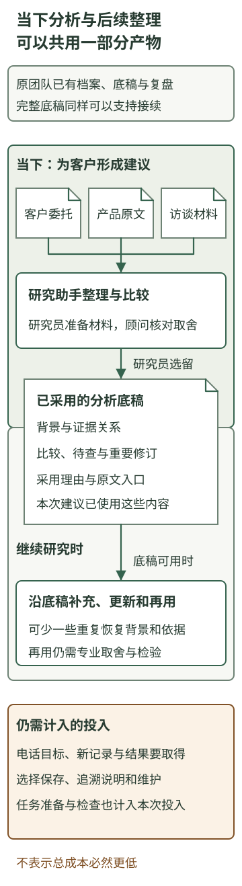

生产中的判断怎样成为企业经验
本章内容
一家研究AI行业的咨询公司，为企业负责人提供技术研究和应用建议。客户不缺新品消息，缺的是对自己有用的判断：这项变化会影响哪段业务，现在值得投入什么，哪些条件还不清楚？研究团队需要读产品资料、比较证据、了解客户的工作，再把它们组织成建议。
这样的公司会积累很多报告，也会形成熟练的研究人员。但报告越多，并不意味着后来的人越容易接着做。一次判断为什么成立、当时放弃了什么选择、客户后来做了什么，未必都能从成品中恢复。人事更替、项目交接或情境变化时，团队仍可能重新做一轮已经做过的理解。
AI参与这类研究，可能改变的正是这部分积累劳动。为了完成眼前的分析，任务背景、证据关系和部分取舍需要成为可以讨论、修改的工作产物；这些产物也能支持后续研究。一部分经验整理，可以与实际生产中的分析劳动重合，而不必全部留到交付以后重新恢复。要看清这种变化，既要看专业判断原来怎样产生，也要看哪些工作真的因此少做了一遍。
以下咨询公司、设备企业、产品介绍、访谈与工单摘录均为教学构造，AI产物也是处理示意。场景用于比较工作安排与推演条件；实际技术组成的来源见文末。
一、一条技术消息，怎样成为客户可以使用的建议
这次，客户是一家设备制造企业的服务负责人。服务部门既回答标准产品的参数、保养等常见咨询，也处理需要了解现场情况的复杂问题。新人经常请教资深人员，负责人希望让更多常规咨询得到及时回应，让专家有精力处理复杂情况。
此时，一款AI产品发布了多文档问答功能。所谓多文档问答，就是在一组资料中查找相关内容、结合材料准备回答，并显示引用出处。服务负责人问咨询公司：“我们有很多手册和服务记录，能否用它帮助新人准备客户答复？”
这项研究最初取得了几类材料：
| 材料 | 其中提供的信息 |
|---|---|
| 产品介绍与演示 | 宣称可以结合多份资料回答并给出引用；演示使用内容齐整、版本明确的文档 |
| 客户的研究委托 | 想让新人承担更多常规答复，减少对资深人员的等待；希望知道什么工作值得先尝试 |
| 对现有服务的初步了解 | 标准资料查询与现场问题支持并存；已有手册和记录，但“等待专家”具体发生在哪一步，还没有分清 |
如果只做新闻摘要，研究员可以介绍新功能、使用方式和产品限制。这份摘要能帮助客户了解供给，却还没有回答怎样使用供给。咨询判断还要多走一步：产品改变了什么劳动，它与客户想解决的等待有什么关系？
查找标准产品的已有说明，与判断现场到底发生了什么，依赖的材料不同。前者可能已经有明确问题和适用文档，多文档问答有机会帮助准备答复；后者还可能需要补问现象、确认设备状态，单有资料并不能补齐这些事实。负责人所说的“等专家”，可能包含这些不同工作，值得先拆开观察。
因此，顾问形成的建议是：从问题较明确的标准产品资料查询中，选择一类任务作小范围尝试；同时查看近期服务记录，分清等待发生在查资料、判断资料是否适用，还是补齐客户描述。研究要观察新人能否据此准备可用答复，再决定下一步投入。
这份建议的价值，不在于比产品介绍多一句赞成或反对。它把一种新能力放到了客户的实际工作里，提出了一个有理由的尝试方向，也说明下一次取材要解决什么问题。客户因此可以讨论一项具体选择，而不是在“拥抱AI”与“再等等”之间凭印象表态。
二、留下了建议，为什么仍可能丢掉经验
这家公司原来就有研究规范：核对来源，区分厂商宣称与实际观察，解释材料与客户目标的关系。项目资料、访谈记录、研究笔记和交付简报都会归档，重要项目也安排复盘。这些安排已经帮助团队保留来源与稳定方法。
不过，给客户的简报通常会压缩讨论。最后留下的结论可能是：“建议从标准产品资料查询开始尝试，现场问题支持另作调查。”对当时参与讨论的人，这句话足够清楚；后来接手的人却可能还要问：为什么这样划范围？是因为这款产品不能处理复杂问题，还是客户目前缺少描述问题的材料？如果换一款能力更强的产品，这个选择是否就应该改变？
答案藏在任务与证据的联系里。产品演示说明了怎样从文档准备回答，尚未说明客户的等待都来自检索；“标准产品查询”是便于先观察的一类工作，并不是永久排除其他方向；是否扩大，要看客户实际取得了什么结果。这些关系决定了下一次怎样判断，单看结论不一定能恢复。
原始资料都在，团队当然可以重新读，但需要把分散材料放回当时的问题中。访谈里的一句“新人常等专家”，只有与服务目标、产品能力和顾问的追问联系起来，才能知道它为什么影响研究范围。有人还要解释，哪些想法当时只是待查假设，哪些已被客户确认。
SOP等工作规范能保存稳定的方法，例如要求核对来源、说明适用条件。具体情境中的取舍却不会因此自动写全。相同的核查要求，面对不同客户，可能引出不同问题；某项事实在这次成为决定性依据，在下次又未必重要。可复用的专业经验，既有方法，也有方法在具体条件下怎样被使用的认识。
所以，经验难留并不只是存储问题。把已经完成的工作重新整理成别人可以使用的材料，需要恢复背景、连接证据、说明取舍，再接上后续事实。这些劳动可以做得很好，但它们会占用专业时间。为重要项目安排复盘，并不等于能把同样的整理覆盖到每一项日常判断。
三、同一项研究，AI使什么内容成为工作产物
现在比较咨询公司自己的另一种研究安排。客户评估的是售后问答产品，咨询团队使用的则是自己的AI研究助手；它帮助研究员阅读行业资料、组织问题和起草底稿。公司希望借此更经常地为客户准备有针对性的分析。顾问据具体材料作取舍，研究员据此继续取材。
研究员使用客户已有的委托说明、访谈文字和产品原文，交代本次要帮助负责人选择什么。材料进入AI分析，可以是直接提供相关原文，也可以由已接通资料来源的应用读取。此时要形成的不是一份通用产品介绍，而是供团队讨论的证据比较。
围绕同一组材料，AI可以准备这样的分析底稿：
新能力与客户工作的联系：多文档问答可能帮助把已有说明整理成答复，因而值得调查标准资料查询。客户的目标是让新人准备更多可用答复，不能只用生成文字的速度评价。
当前还不能合并判断的工作：“等待专家”可能来自找不到资料，也可能来自不知道资料是否适合本次情况，或客户描述还不完整。产品演示没有替客户分清这几种情况。
影响下一步选择的材料：取得近期服务记录，查看问题最初怎样提出、专家补问过什么、最后采用了哪些资料。先选出输入较清楚的一类工作观察，再判断哪些帮助真正进入了服务。
这份底稿把不同材料各自的含义连了起来。产品介绍是供给方的能力陈述，委托说明给出客户目标，访谈提供工作线索；它们不是三份同类证据，也不能互相替代。AI可以帮助提取有关段落、对照差异、把分散文字重排到同一个问题下，准备需要专业人员讨论的关系。
顾问仍要判断这些比较是否成立。例如，“先看标准资料查询”是当前合理的研究选择，不能在简报里变成“只有标准查询值得做”；客户尚未提供的等待原因，也应继续作为调查问题。研究员把讨论后采用的判断写入简报，并在同一项目目录保留相应底稿、原文入口和修订说明。
这里已经出现了与积累有关的变化。为了给客户形成一份有用建议，背景、证据对应、候选解释和待查问题，本来就进入了分析。AI准备的底稿把其中一部分写成了可讨论的文字，团队的采用与修订又使它更准确。这些内容既是当前生产的中间产物，也可以成为之后接续研究的材料。
研究底稿留下的是团队可核对的依据、比较和采用理由。若只保存一段流畅结论，仍会失去条件；若把所有响应都堆进目录，又会把选择和辨认的劳动留给后来的人。研究员保留采用的分析、重要修订及其来源，是在已经产生的内容中作选择。
这类工作已有可参考的技术组成。AI洞察站的项目资料把读者目标、专家方法、取材、判断与保存组织在一项任务中；生成主链维护说明记录了固定原文依据、固定结果及再次读取，并记载了一个真实生成样本。它们支持上述工作组织的部分机制。客户行动回收、研究方法怎样被团队采用和持续更新，则仍要另行安排。
四、这会减少重复整理，还是只把劳动搬到了前面
让员工先给AI交代背景，再保存说明，当然也要花时间。如果只是把原来的复盘改成提前填写一张更长的表，不能因此认定积累成本下降。
在这项研究中，客户委托、访谈和产品原文已经是研究所需的材料。研究员让AI读它们，是为了判断眼前的应用方向；把产品能力与客户目标对照，是为了形成建议；区分已知、假设和待查事项，是为了安排下一轮调查。这些工作即使不打算积累经验，本次分析也需要完成。
AI的实际作用，是帮助处理这些形式和侧重点不同的文字：从产品介绍中找能力依据，从访谈中辨认业务疑问，把它们组织成可讨论的比较；有新材料时，还可以对照原判断起草修订。研究员不必先把每份原文都改写成同一种格式，才有机会利用它们。哪些提取和比较值得采用，仍要由当前研究来判断。
如果这些分析产物已经形成，后续整理便有了一份可用起点。团队可以直接沿采用的底稿补充后果，不必再次访谈所有参与者，重新问“当时为什么这样想”，再从原文中恢复同一组关系。可能减少的是这部分重复恢复和改写，并不是交代背景、取得事实和专业判断的全部劳动。
其中仍有真实的新增投入。只在电话中说过的客户目标，需要写清；尚未取得的工作记录和结果，需要去问；只为追溯而添加的说明、保存安排和后续维护，也要计入成本。给AI解释任务，本身属于本次分析投入，不能因为它将来可能复用就从账上消失。
传统团队也可以通过良好的研究底稿、复盘与SOP做到这些。如果原来已经完整保留了任务、依据和取舍，AI带来的变化可能主要在阅读、整理与更新这些内容的劳动上，而不是突然多出一种过去无法保存的经验。反过来，若任务很少重复，或者为AI准备资料和检查输出增加了过多负担，采用它也未必让积累更划算。
因此，值得发展的机会是：借助AI承担一部分跨材料整理，让可复用内容更经常地随研究产生，把原先只对重点项目承担得起的整理，逐步尝试用于更多日常工作。它是否值得，取决于新增准备与维护、减少的重复劳动，以及后来真正使用了多少。没有必要先编出一个节省比例，才能看清这项生产关系的变化。

五、产物进入下一次判断，才开始形成企业能力
回到设备企业的研究。客户按建议带来了近期服务记录，其中两段摘录使原来的问题更具体：
一项咨询只需确认标准产品的一项参数，服务人员找到适用手册后就能准备答复。
另一项咨询最初只写“设备偶发停机”。专家先追问发生时机和近期改动，补充情况以后，才确定接下来要看哪些资料。
前一段显示了适合观察资料准备帮助的工作；后一段显示，部分等待发生在检索之前。对这项研究而言，客户所说的“减少等待专家”有了更具体的观察方向：资料准备能否改善，以及是否需要先帮助服务人员问清问题。
研究员据此更新底稿。原来“等待可能来自不同环节”的判断，有了客户工作中的具体例子。下一轮讨论可以分别观察：资料适用且问题明确时，问答帮助了什么；描述不足时，是否还需要先协助整理待问问题。AI能帮团队把新记录与原判断对照、起草这份更新，顾问则决定哪些认识进入研究方法。
公司在应用机会调查说明中补入了一项具体要求：客户说某项工作“慢”或“依赖专家”时，先还原一段实际工作，分清时间用在取得事实、查找资料、判断适用性，还是形成行动建议。两段服务记录保留为解释这项要求的例子，仍按各自条件使用。
下一期研究由另一位同事继续。他读到的除了上次“从标准查询开始”的建议，还有当时的客户目标、选择理由、后来取得的服务记录及已经细化的方法。因此，他与研究助手准备下一轮分析时，可以直接提出：分别选择问题清楚与仍需追问的工作，观察帮助发生在哪里；同时查清客户考虑的问答工具能否支持这些工作。客户讨论也从泛泛问“回答准不准”，推进到“哪段工作发生了什么变化，下一步值得发展什么”。
这次接续显示了几种不同进展。保存材料，使工作可以找回；把反馈与原判断相连，使认识得到具体支持或修订；将采用的方法用于下一期，才使它进入持续生产。一份底稿可以支持这些变化，却不会单凭保存成功自动完成它们。
客户是否实际尝试、怎样使用以及结果如何，仍需继续取得。研究公司能保留什么、把什么纳入共同方法，需要有人承担取舍。已经接通存储与读取的应用，可以帮助后续任务取得相关材料；这和重新训练模型是不同的工作，也不能代替专业认识的检验。
从一次建议走到企业经验，关键不是把交付物变得更厚，而是让重要判断的依据、条件和后果能够继续参与工作。AI参与生产，使其中一些整理有机会在分析发生时完成；人的选择、事实回收和再次使用，使这些产物逐渐成为共同能力。
当这样的积累持续发生，研究公司提供的就可能不只是一次行业消息解释。它能够沿客户的问题继续取材，知道哪些假设尚未解决，并让不同研究人员接续推进。已有客户认识与研究方法，也有机会影响下一次关注什么、调查什么。这些积累怎样成为客户重视的企业差异，是后续需要进一步论证的关系。
来源说明
咨询团队研究助手的技术起点，采用本项目保存的AI洞察站项目介绍、自主日更产品约定及2026-10-14生成主链维护说明。这些文件分别说明目标导向研究的产品组织、判断与实际采用的区别，以及对应应用和一个真实生成样本的验证范围；本次没有重跑产品或查看未提供的私有样本。
从真实工作到能力资产用于对照原始记录、候选认识和实际复用的分工；DeepAgents第8章用于对照保存、加载与更新的机制。本文没有直接改编这些材料的章节或把其方法说明当作企业效果研究。